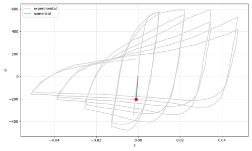
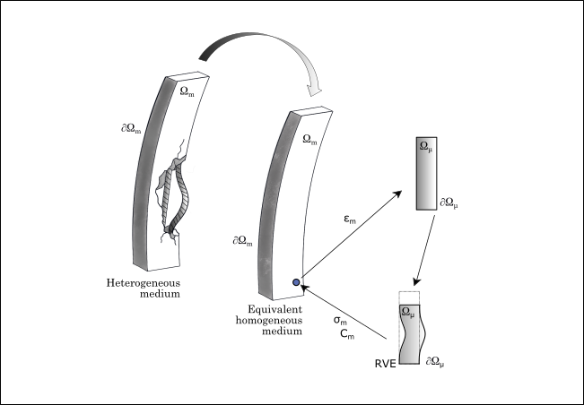
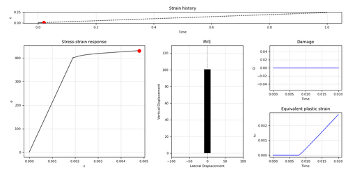
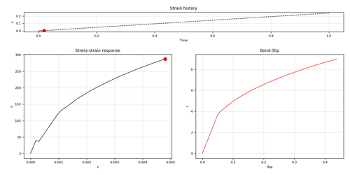

3.1.5.4. ASDSteel1D Material

- uniaxialMaterial ASDSteel1D $tag $E $sy $su $eu
- <-implex>
- <-auto_regularization>
- <-buckling $lch <$r>>
- <-fracture <$r>>
- <-slip $matTag <$r>>
- <-K_alpha $K_alpha>
- <-max_iter $max_iter>
- <-tolU $tolU>
- <-tolR $tolR>
Argument |
Type |
Description |
|---|---|---|
$tag |
|
Unique tag identifying this material. |
$E $sy $su $eu |
4 |
Mandatory. Young’s modulus, Yield stress, Ultimate stress and Ultimate strain. |
-implex |
|
Optional. If defined, the IMPL-EX integration will be used, otherwise the standard implicit integration will be used (default). |
-auto_regularization |
|
Optional. Activates automatic regularization based on the characteristic length of the finite element. |
-buckling $lch <$r> |
|
Optional. Enables buckling simulation using an RVE-based approach. Requires characteristic length $lch and optionally a section radius $r. |
-fracture <$r> |
|
Optional. Activates fracture modeling. Optionally specify the section radius $r. |
-slip $matTag <$r> |
|
Optional. Activates slip modeling with a secondary uniaxial material ($matTag). Optionally specify the section radius $r. |
-K_alpha $K_alpha |
|
Optional. Defines the weight between the consistent elastoplastic tangent modulus and the purely elastic modulus (default = 0.5). Set to 1.0 for full consistent tangent, or 0.0 to use only the elastic modulus. |
-max_iter $max_iter |
|
Optional. Maximum number of iterations for the global Newton-Raphson loop used in the RVE (default = 100). |
-tolU $tolU |
|
Optional. Tolerance on displacement increment convergence (default = 1e-6). |
-tolR $tolR |
|
Optional. Tolerance on residual force convergence (default = 1e-6). |
3.1.5.4.1. Theory
3.1.5.4.2. Plasticity
3.1.5.4.3. Damage
3.1.5.4.4. Buckling

3.1.5.4.5. Bond-Slip
3.1.5.4.6. Regularization
3.1.5.4.7. IMPL-EX scheme
3.1.5.4.8. Usage Notes
Responses
All standard responses for a uniaxialMaterial object: stress, strain, tangent.
BucklingIndicator or BI: The lateral displacement caused by buckling (available with the -buckling option).
EquivalentPlasticStrain or PLE: The equivalent plastic strain.
Damage or D: Current damage variable (available with the -fracture option).
SlipResponse: 2 components (\(slip\), \(\tau\)). Current bond-slip response (available with the -slip option).
Example 1 - Fracture
A Python example to simulate tensile fracture: ASDSteel1D_Ex_Damage.py

Example 3 - Bond-Slip
A Python example to simulate rebars bond-slip: ASDSteel1D_Ex_Bond_Slip.py

Code Developed by: Alessia Casalucci at ASDEA Software, Italy.
3.1.5.4.9. References
Kashani, M. M., Lowes, L. N., Crewe, A. J., & Alexander, N. A. (2015). “Phenomenological hysteretic model for corroded reinforcing bars including inelastic buckling and low-cycle fatigue degradation” Computers & Structures, 156, 58-71 (Link to article)
Oliver, J., Huespe, A. E., & Cante, J. C. (2008). “An implicit/explicit integration scheme to increase computability of non-linear material and contact/friction problems” Computer Methods in Applied Mechanics and Engineering, 197(21-24), 1865-1889 (Link to article)